## # A tibble: 6 × 6
## species sex n mean_mass sd_mass se_mass
## <fct> <fct> <int> <dbl> <dbl> <dbl>
## 1 Adelie female 73 3369. 269. 31.5
## 2 Adelie male 73 4043. 347. 40.6
## 3 Chinstrap female 34 3527. 285. 48.9
## 4 Chinstrap male 34 3939. 362. 62.1
## 5 Gentoo female 58 4680. 282. 37.0
## 6 Gentoo male 61 5485. 313. 40.1Lecture: Two-Way ANOVA
Factorial designs
Bill Perry
Where We Left Off
Covered last time — one-way ANOVA:
- The ANOVA model, and fixed vs. random predictors
- Partitioning variance: \(SS_{total} = SS_{groups} + SS_{residual}\)
- The null hypothesis, and the F-ratio that tests it
- Assumptions and diagnostics on the residuals
- Post-hoc tests — Tukey and others
- Reporting the result
Note
✅ Key idea from last lecture
One-way ANOVA asks “do these groups differ?” for one factor. Today: what happens when two factors act together — separately, and possibly interacting?

Part 1 · Factorial ANOVA — the Concept
Two-Factor Designs (2-Way ANOVA)
- Very common in ecology
- Can have more factors (e.g., 3-way ANOVA), but interpretation gets very challenging
- Most multifactor designs are factorial or nested
- We’ll cover a 2-factor ANOVA — say fertilizer and sunlight, for plant biomass:
- each can have an effect independently
- or they may interact: under high light, high fertilizer grows better than either effect alone would predict
Note
📖 Reference
Gotelli & Ellison, A Primer of Ecological Statistics, Ch. 10 — The Analysis of Variance, extends to factorial designs like the one covered today.
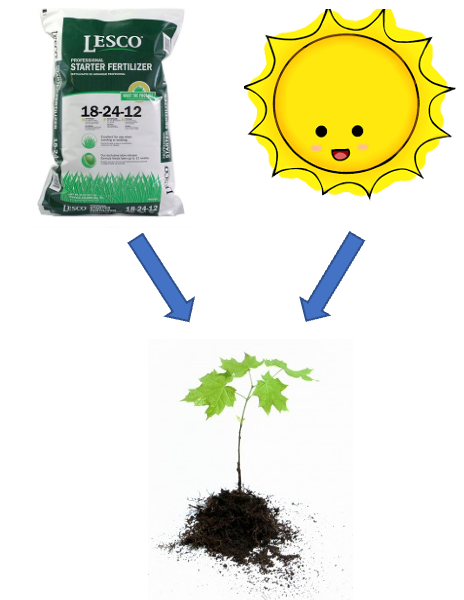
Factorial ANOVA: Design Structure
Consider two factors:
- Factorial/crossed: every level of B in every level of A
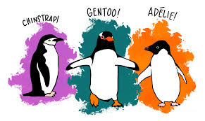
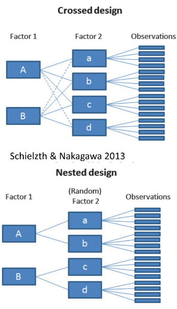
Factorial ANOVA: Effect Types
In factorial designs, we look at two types of factor effects:
- Main effect of each factor (pooling across the other factor)
- Interaction effects — is there a synergistic/antagonistic effect between factors?
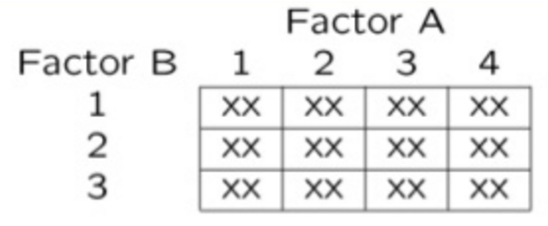
Part 2 · Setting Up — the Penguin Data
Introduction to Two-Way ANOVA
Two-way ANOVA examines:
- Main effect of Factor A (Species)
- Main effect of Factor B (Sex)
- Interaction between A × B
- Balanced design: equal sample sizes in all cells
- Type III sums of squares, which test each term adjusted for every other term — if the design is balanced, the choice of SS type doesn’t matter
Data Preparation — Creating a Balanced Design
The penguin data frame is unbalanced — there are unequal samples per cell.
## # A tibble: 3 × 3
## species female male
## <fct> <int> <int>
## 1 Adelie 73 73
## 2 Chinstrap 34 34
## 3 Gentoo 58 61## Minimum n = 34
## # A tibble: 3 × 3
## species female male
## <fct> <int> <int>
## 1 Adelie 34 34
## 2 Chinstrap 34 34
## 3 Gentoo 34 34Statistical model:
\[Y_{ijk} = \mu + \alpha_i + \beta_j + (\alpha\beta)_{ij} + \varepsilon_{ijk}\]
μ = grand mean, α_i = effect of species i, β_j = effect of sex j, (αβ)_ij = interaction effect, ε_ijk = random error.
Descriptive Statistics
## # A tibble: 6 × 6
## species sex n mean_mass sd_mass se_mass
## <fct> <fct> <int> <dbl> <dbl> <dbl>
## 1 Adelie female 34 3335. 260. 44.5
## 2 Adelie male 34 4049. 318. 54.5
## 3 Chinstrap female 34 3527. 285. 48.9
## 4 Chinstrap male 34 3939. 362. 62.1
## 5 Gentoo female 34 4681. 309. 53.0
## 6 Gentoo male 34 5525 274. 47.0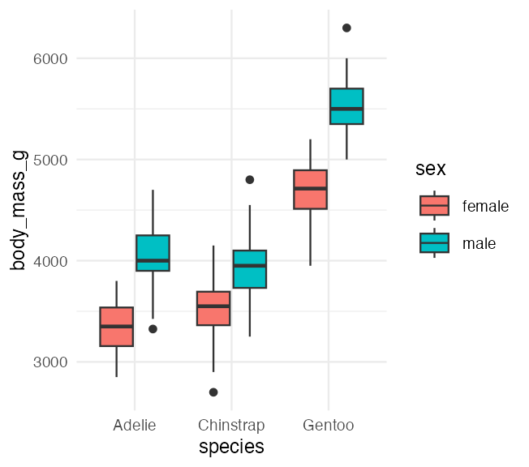
Part 3 · The Factorial Model
Factorial ANOVA Models
Factorial designs can be of 3 types:
- Model 1 — 2 fixed factors (the focus for today)
- Model 2 — 2 random factors
- Model 3 — 1 fixed, 1 random (mixed model) — often nested
Model 1 ANOVA:
\[y_{ijk} = \mu + \alpha_i + \beta_j + (\alpha\beta)_{ij} + \varepsilon_{ijk}\]
Tip
🖐 Notice
The formula looks identical to Model 2 and Model 3 — what changes between them is whether α, β are treated as fixed effects (specific groups you care about) or random effects (a sample from a larger population of possible groups).
Model Components — the Main Effects
\[y_{ijk} = \mu + \alpha_i + \beta_j + (\alpha\beta)_{ij} + \varepsilon_{ijk}\]
- \(y_{ijk}\): value of the k-th observation from the j-th and i-th combination of B and A (sex j of species i)
- μ: overall mean (overall mass)
- \(\alpha_i\): effect of the i-th level of A, pooling across all levels of B — \(\mu_i - \mu\) (difference between the average mass of all “species i” penguins and the overall mean)
Tip
🖐 Notice
Every effect in this model is defined as a deviation from a mean — the grand mean, or a group mean. This is exactly the same logic as a t-test or one-way ANOVA, just with more terms.
Model Components — the Interaction
\[y_{ijk} = \mu + \alpha_i + \beta_j + (\alpha\beta)_{ij} + \varepsilon_{ijk}\]
- \(\beta_j\): effect of the j-th level of B, pooling across all levels of A — \(\mu_j - \mu\) (difference between the average mass of all “sex j” penguins and the overall mean)
- \((\alpha\beta)_{ij}\): effect of the interaction of level i of A and level j of B — \(\mu_{ij} - \mu_i - \mu_j + \mu\). Does the effect of B depend on the level of A? (Is the effect of sex different across the 3 species?)
Note
✅ Key idea
The interaction term is what’s left over after you subtract out both main effects and the grand mean — it’s literally “the part the additive model can’t explain.”
Model Types and Interpretation
\[y_{ijk} = \mu + \alpha_i + \beta_j + (\alpha\beta)_{ij} + \varepsilon_{ijk}\]
- Model 2 ANOVA is rare in ecology
- Model 3 interpretation is different:
- \(\beta_j\): random variable measuring variance in y across all possible levels of B, pooling across A
- \((\alpha\beta)_{ij}\) is a random variable measuring variance of the interaction between A and B across all possible levels of B (“is the effect of A consistent across all possible levels of B that could have been chosen?”)
Warning
⚠️ Watch out!
Fixed vs. random isn’t about the data — it’s about the question. Are you interested in these specific 3 species (fixed), or in “species” as a general source of variation (random)?
Part 4 · Estimated Marginal Means
What a Marginal Mean Is For
A fertilizer trial run at two light levels. Biomass (g), with cell n in brackets:
| low light | high light | raw mean | EMM | |
|---|---|---|---|---|
| control | 10 [2] | 20 [18] | 19.0 | 15 |
| fertilized | 30 [18] | 40 [2] | 31.0 | 35 |
- Raw mean weights by how many plants happened to land in each cell: \(\frac{2(10)+18(20)}{20} = 19.0\)
- EMM weights the two cells equally: \(\frac{10+20}{2} = 15\)
Raw says fertilizer adds 12 g. The EMM says 20 g.
Important
⚠️ Which number is the fertilizer effect?
Almost every control plant sat in high light, and almost every fertilized plant in low light. Light raises biomass on its own — so the raw comparison is handing the control group a free bonus and hiding most of the fertilizer effect.
20 g is the answer to the question you asked. The EMM gets it by refusing to let an accident of sample size decide how the two light levels are weighted.
The Same Thing, in emmeans
set.seed(42)
toy_df <- tibble(
fert = rep(c("control", "fertilized"), each = 20),
light = c(rep("low", 2), rep("high", 18),
rep("low", 18), rep("high", 2)),
target = c(rep(10, 2), rep(20, 18),
rep(30, 18), rep(40, 2))) %>%
group_by(fert, light) %>%
mutate(mass = target + as.numeric(scale(rnorm(n()))) * 3) %>%
ungroup()
# what group_by() gives you
toy_df %>% group_by(fert) %>% summarise(raw = mean(mass))
## # A tibble: 2 × 2
## fert raw
## <chr> <dbl>
## 1 control 19
## 2 fertilized 31Note
✅ This is the whole idea
emmeans() goes to the model, predicts each of the four cells, and then averages those four predictions unweighted.
group_by() %>% mean() goes to the data and averages the rows, so a big cell shouts louder.
Read the footer it prints: “Results are averaged over the levels of: light” — that line is emmeans telling you exactly what it just did.
Estimated Marginal Means — Species
Now the real data — and a much milder version of the same thing.
- Balanced cells: the EMM and the raw mean are the same number
- Unbalanced cells: the EMM is the mean of the cell means; the raw mean weights by cell n
## Combined table with means and counts:
## species female male female_n male_n
## 1 Adelie 3369 4043 73 73
## 2 Chinstrap 3527 3939 34 34
## 3 Gentoo 4680 5485 58 61
##
##
## Raw species means (weighted by cell n):
## species total_n regular_mean
## 1 Adelie 146 3706.164
## 2 Chinstrap 68 3733.088
## 3 Gentoo 119 5092.437## EMM = unweighted mean of the 2 cell means:
## species calculation
## 1 Adelie (3369 + 4043) / 2 = 3706
## 2 Chinstrap (3527 + 3939) / 2 = 3733
## 3 Gentoo (4680 + 5485) / 2 = 5082
##
##
## Comparison showing EMM calculation:
## species emm raw_mean diff
## 1 Adelie 3706.2 3706.2 0.0
## 2 Chinstrap 3733.1 3733.1 0.0
## 3 Gentoo 5082.3 5092.4 -10.1Warning
⚠️ Check the diff column
Two of the three species are perfectly balanced, so their two means are the same number. See the next slide.
Estimated Marginal Means — Sex
- Balanced data: just the means of the groups
- Unbalanced data: mean of cell means
Warning
⚠️ Different quantities, barely different numbers — here
Adelie is 73/73 and Chinstrap is 34/34, so for those two the raw mean and the EMM are identical. Only Gentoo (58 F / 61 M) moves, by ~10 g out of 5082.
Hold both facts: the raw mean is the wrong quantity whenever cells are uneven, and on a nearly-even design it is a very good approximation. A badly lopsided cell is where this stops being a technicality.
## Combined table with means and counts:
## species female male female_n male_n
## 1 Adelie 3369 4043 73 73
## 2 Chinstrap 3527 3939 34 34
## 3 Gentoo 4680 5485 58 61##
## Raw sex means (weighted by cell n):
## sex total_n regular_mean
## 1 female 165 3862.273
## 2 male 168 4545.685
##
##
## EMM = unweighted mean of the 3 cell means:
## sex calculation
## 1 female (3369 + 3527 + 4680) / 3 = 3859
## 2 male (4043 + 3939 + 5485) / 3 = 4489
##
##
## Comparison: raw mean vs. marginal mean
## sex n raw_mean emm diff
## 1 female 165 3862.3 3858.6 -3.7
## 2 male 168 4545.7 4489.1 -56.6Part 5 · The Two-Way ANOVA Table
ANOVA Table Structure
On a balanced design the four pieces add up exactly:
\[SS_{total} = SS_A + SS_B + SS_{AB} + SS_{residual}\]
- \(SS_{total} = \sum\sum\sum (Y_{ijk} - \bar{Y})^2\) — every observation against the grand mean
- \(SS_{residual} = \sum\sum\sum (Y_{ijk} - \bar{Y}_{ij})^2\) — every observation against its own cell mean
Everything else is the same move you already know from one-way ANOVA: how far is a mean from the mean above it, squared, and counted once for every observation it stands for.
| Source | df |
|---|---|
| A | p − 1 |
| B | q − 1 |
| AB | (p−1)(q−1) |
| Residual | pq(n−1) |
| Total | pqn − 1 |
where p = levels of A, q = levels of B, n = replicates per cell.
SSA: Factor A Effects
\[SS_A = qn\sum_{i=1}^{p}\left(\bar{Y}_{i\cdot} - \bar{Y}\right)^2\]
- \(\bar{Y}_{i\cdot}\) is the marginal mean of level i of A — the EMM for that species
- Square its distance from the grand mean, and multiply by \(qn\), the number of observations that marginal mean stands for (q levels of B × n per cell)
- The multiplier is not optional. Without it you have the SS of 3 numbers, not of 204 observations, and the df would not match.
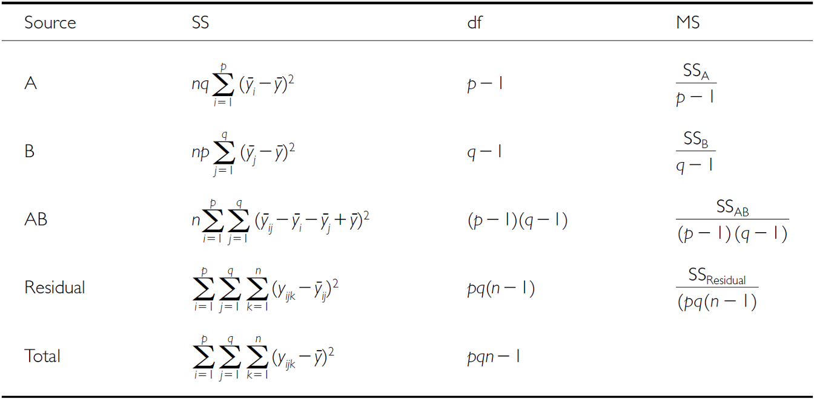
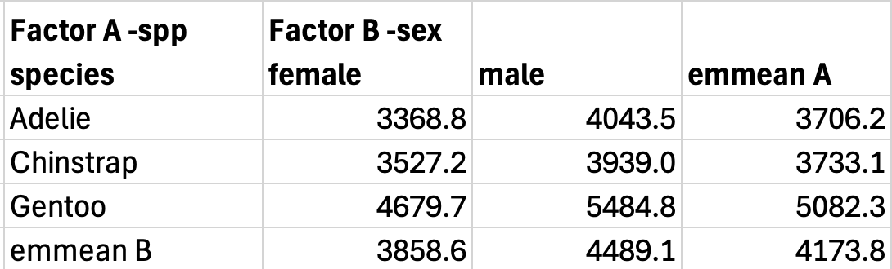
SSB: Factor B Effects
\[SS_B = pn\sum_{j=1}^{q}\left(\bar{Y}_{\cdot j} - \bar{Y}\right)^2\]
- Same move, the other way round: each column marginal mean against the grand mean
- Multiplier is now \(pn\) — p levels of A × n per cell — because each sex EMM stands for that many birds
SSAB: Interaction Effects
\[SS_{AB} = n\sum_{i=1}^{p}\sum_{j=1}^{q}\left(\bar{Y}_{ij} - \bar{Y}_{i\cdot} - \bar{Y}_{\cdot j} + \bar{Y}\right)^2\]
- Take a cell mean, subtract what the two main effects alone predict for it, and you are left with the interaction
- \(\bar{Y}_{i\cdot} + \bar{Y}_{\cdot j} - \bar{Y}\) is the additive prediction; the grand mean is added back because it was subtracted twice
- Multiplier is just \(n\) — a cell mean stands for only the n birds in that cell
Note
✅ Key idea
\(SS_{AB}\) is the leftovers. If the additive model predicted every cell mean perfectly, every one of those brackets would be zero and \(SS_{AB} = 0\).
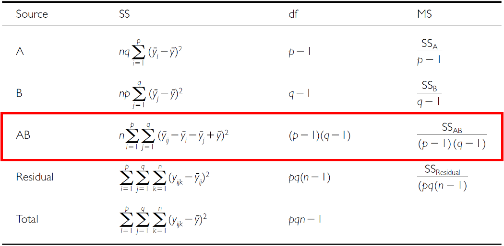
The Four SS, by Hand
nrep <- 34; plev <- 3; qlev <- 2
gm <- mean(balanced_df$body_mass_g)
cm <- tapply(balanced_df$body_mass_g, # 3 x 2 cell means
list(balanced_df$species, balanced_df$sex), mean)
mA <- rowMeans(cm) # species marginals
mB <- colMeans(cm) # sex marginals
ss_a <- qlev * nrep * sum((mA - gm)^2)
ss_b <- plev * nrep * sum((mB - gm)^2)
ss_ab <- nrep * sum((cm - outer(mA, mB, "+") + gm)^2)
ss_res <- sum(residuals(lm(body_mass_g ~ species * sex,
data = balanced_df))^2)
round(c(A = ss_a, B = ss_b, AB = ss_ab, Res = ss_res))
## A B AB Res
## 87725999 21988483 1672776 18199467Note
✅ Key idea
Four lines of arithmetic, and they match anova() to the last digit — and they add to \(SS_{total}\). That second part is true because the design is balanced. In Part 8 it stops being true.
F-Ratio Calculations
SS converts to MS; which MS goes in the denominator depends on whether each factor is fixed or random.
The rule: the denominator must have the same expected MS as the numerator when \(H_0\) is true.
For a main effect:
- crossed only with fixed factors → its expected MS collapses to \(\sigma^2\) under \(H_0\) → test over \(MS_{Res}\)
- crossed with a random factor → its expected MS keeps an extra \(n\sigma^2_{AB}\) → test over \(MS_{AB}\)
The interaction is tested over \(MS_{Res}\) in all three models.
| Source | Model 1 both fixed | Model 2 both random | Model 3 A fixed, B random |
|---|---|---|---|
| A | \(MS_A/MS_{Res}\) | \(MS_A/MS_{AB}\) | \(MS_A/MS_{AB}\) |
| B | \(MS_B/MS_{Res}\) | \(MS_B/MS_{AB}\) | \(MS_B/MS_{Res}\) |
| AB | \(MS_{AB}/MS_{Res}\) | \(MS_{AB}/MS_{Res}\) | \(MS_{AB}/MS_{Res}\) |
Why a Mixed Model Tests the Fixed Factor over the Interaction
Expected mean squares, with \(a\) levels of A, \(b\) levels of B, \(n\) per cell:
| Source | Both fixed | Both random | A fixed, B random |
|---|---|---|---|
| A | \(\sigma^2 + nb\Sigma\alpha^2/(a-1)\) | \(\sigma^2 + n\sigma^2_{AB} + nb\sigma^2_A\) | \(\sigma^2 + n\sigma^2_{AB} + nb\Sigma\alpha^2/(a-1)\) |
| B | \(\sigma^2 + na\Sigma\beta^2/(b-1)\) | \(\sigma^2 + n\sigma^2_{AB} + na\sigma^2_B\) | \(\sigma^2 + na\sigma^2_B\) |
| AB | \(\sigma^2 + n\Sigma(\alpha\beta)^2/[(a-1)(b-1)]\) | \(\sigma^2 + n\sigma^2_{AB}\) | \(\sigma^2 + n\sigma^2_{AB}\) |
| Residual | \(\sigma^2\) | \(\sigma^2\) | \(\sigma^2\) |
Under Model 3, if A has no effect, \(E(MS_A)\) collapses to \(\sigma^2 + n\sigma^2_{AB}\) — exactly \(E(MS_{AB})\). Dividing by \(MS_{Res}\) would leave \(n\sigma^2_{AB}\) in the numerator and inflate F even with no real A effect.
\(E(MS_B)\) has no \(n\sigma^2_{AB}\) term, so the random factor B is tested over \(MS_{Res}\) — not \(MS_{AB}\).
Note
✅ Key idea
When B is random, its levels are a sample (sites, years, lakes, families). If A’s effect varies across B levels, the A means you observed depend on which B levels you happened to draw. That sampling noise in the A effect is \(\sigma^2_{AB}\), and within-cell error never sees it. So your effective replication for generalizing A is the number of B levels — which is why the test of A has \((a-1)\) and \((a-1)(b-1)\) df. Same logic as avoiding pseudoreplication.
Restricted vs. Unrestricted Mixed Models
The Model 3 column on the last two slides is the restricted mixed model — Sokal & Rohlf, Zar, and most biostats texts. It assumes interaction effects sum to zero across levels of the fixed factor, which drops \(\sigma^2_{AB}\) from \(E(MS_B)\) and leaves B tested over \(MS_{Res}\).
The unrestricted model (Searle; the default behind some software, e.g. SAS’s RANDOM statement) keeps \(n\sigma^2_{AB}\) in \(E(MS_B)\) and tests B over \(MS_{AB}\).
Neither is universally “right” — it’s a long-running debate. Know which one your software used before you trust its F-ratios.
Warning
⚠️ Watch out!
Software output can disagree with the textbook for exactly this reason.
Fitting with lmer() and Satterthwaite or Kenward-Roger df sidesteps hand-picking denominators altogether — and it handles unbalanced designs, where this EMS logic breaks down anyway.
Hypotheses — Both Factors Fixed
3 hypotheses are tested in a two-way factorial ANOVA: A, B, A×B. Both factors fixed:
- \(H_0(A)\): \(\mu_1 = \mu_2 = ... = \mu_p\) (no difference in marginal means of A, pooling across B)
- \(H_0(B)\): \(\mu_1 = \mu_2 = ... = \mu_q\) (no difference in marginal means of B, pooling across A)
- \(H_0(AB)\): \(\mu_{ij} - \mu_i - \mu_j + \mu = 0\) (no interaction effect)
Tip
🖐 Notice
These are exactly the two main-effect hypotheses from a one-way ANOVA, plus one new hypothesis just for the interaction.
Hypotheses — Mixed Model
3 hypotheses: A, B, A×B. One fixed, one random:
- \(H_0(A)\): \(\mu_1 = \mu_2 = ... = \mu_p\) (no difference in marginal means of A, pooling across B)
- \(H_0(B)\): \(\sigma^2_B = 0\) (no added variance due to levels of B that could have been used)
- \(H_0(AB)\): \(\sigma^2_{AB} = 0\) (no added variance due to interaction between all levels of A and B that could have been used)
Warning
⚠️ Watch out!
Notice the switch from “means are equal” (fixed) to “variance is zero” (random) — that’s the fundamental difference in what a random-effect hypothesis is even asking.
Part 6 · Fitting the Balanced Model
Example Study Details
Let’s try the example with the palmerpenguins package data:
- Effect of species and sex on
body_mass_g - 3 species (Factor A)
- 2 sexes (Factor B)
- 34 replicates in each cell
Two-Way ANOVA with Type III Sums of Squares
##
## Call:
## lm(formula = body_mass_g ~ species * sex, data = balanced_df)
##
## Residuals:
## Min 1Q Median 3Q Max
## -827.21 -178.13 6.25 175.00 861.03
##
## Coefficients:
## Estimate Std. Error t value Pr(>|t|)
## (Intercept) 4175.86 21.23 196.727 < 2e-16 ***
## species1 -484.31 30.02 -16.134 < 2e-16 ***
## species2 -442.77 30.02 -14.750 < 2e-16 ***
## sex1 -328.31 21.23 -15.467 < 2e-16 ***
## species1:sex1 -28.68 30.02 -0.955 0.341
## species2:sex1 122.43 30.02 4.078 6.57e-05 ***
## ---
## Signif. codes: 0 '***' 0.001 '**' 0.01 '*' 0.05 '.' 0.1 ' ' 1
##
## Residual standard error: 303.2 on 198 degrees of freedom
## Multiple R-squared: 0.8596, Adjusted R-squared: 0.856
## F-statistic: 242.4 on 5 and 198 DF, p-value: < 2.2e-16## Type III Sums of Squares ANOVA:
## Anova Table (Type III tests)
##
## Response: body_mass_g
## Sum Sq Df F value Pr(>F)
## (Intercept) 3557308900 1 38701.5271 < 2.2e-16 ***
## species 87725999 2 477.2049 < 2.2e-16 ***
## sex 21988483 1 239.2224 < 2.2e-16 ***
## species:sex 1672776 2 9.0994 0.0001657 ***
## Residuals 18199467 198
## ---
## Signif. codes: 0 '***' 0.001 '**' 0.01 '*' 0.05 '.' 0.1 ' ' 1All Three SS Types — on Balanced Data
t1 <- anova(anova_model) # Type I
t2 <- Anova(anova_model, type = "II") # Type II
t3 <- Anova(anova_model, type = "III") # Type III
data.frame(
Effect = c("species", "sex", "species:sex"),
Type_I = round(t1$`Sum Sq`[1:3]),
Type_II = round(t2$`Sum Sq`[1:3]),
Type_III = round(t3$`Sum Sq`[2:4])
)
## Effect Type_I Type_II Type_III
## 1 species 87725999 87725999 87725999
## 2 sex 21988483 21988483 21988483
## 3 species:sex 1672776 1672776 1672776Three different rules for allocating variance — the same three numbers.
That is not a coincidence and it is not R being lazy. With equal cell sizes the two factors are orthogonal: knowing a bird’s species tells you nothing about its chance of being male. Neither factor can “steal” SS from the other, so there is no shared variance left to argue about.
Note
✅ Key idea
The whole Type I / II / III literature exists to answer one question: who gets the variance the two factors share? A balanced design has none to share — which is why balance is worth paying for.
Understanding Type III SS
Type III sums of squares test each effect after adjusting for all other effects in the model:
- Species effect: tested after adjusting for sex and interaction
- Sex effect: tested after adjusting for species and interaction
- Interaction: tested after adjusting for both main effects
This is especially important for unbalanced designs, but we’re using it here for consistency with the next analysis.
## Effect Sizes (partial eta-squared):
## Effect Partial_Eta_Sq
## 1 Species 0.8282
## 2 Sex 0.5471
## 3 Interaction 0.0842Note
📖 Partial η² — see the next slide for why
\[\eta^2_p = \frac{SS_{effect}}{SS_{effect} + SS_{residual}}\]
Which Effect Size, and Why
\[\eta^2 = \frac{SS_{effect}}{SS_{total}} \qquad \eta^2_p = \frac{SS_{effect}}{SS_{effect} + SS_{residual}}\]
- Plain η² asks “of all the variation, how much does this effect explain?” The three effects plus the residual then sum to 1.
- Partial η² asks “of the variation this effect could have explained — its own plus the leftovers — how much does it?” These do not sum to 1.
Warning
⚠️ Why we use partial η² all lecture
The two agree only on a balanced design.
Type III sums of squares do not add up to \(SS_{total}\) once a design is unbalanced — so dividing a Type III SS by the sum of the Type III SS gives a number that is neither η² nor η²ₚ, and you cannot compare it to anything.
Partial η² is well defined either way, so the balanced and unbalanced models in this lecture stay comparable.
Checking Model Assumptions
The four standard diagnostic plots, built automatically with ggfortify::autoplot().
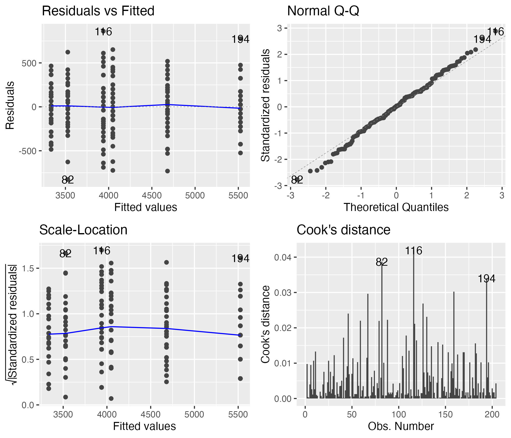
Formal Tests — Normality and Homogeneity
The formal tests of normality of residuals and homogeneity of variances.
## Shapiro-Wilk Normality Test:
##
## Shapiro-Wilk normality test
##
## data: residuals(anova_model)
## W = 0.99612, p-value = 0.8886
## Levene's Test for Homogeneity:
## Levene's Test for Homogeneity of Variance (center = median)
## Df F value Pr(>F)
## group 5 0.7841 0.5622
## 198
## Number of outliers (|z| > 3): 0Part 7 · EMMs and Post-Hoc for the Balanced Model
Computing EMMs — the Marginal Means
The marginal means — each one averaged over the levels of the other factor.
## species emmean SE df lower.CL upper.CL
## Adelie 3692 36.8 198 3619 3764
## Chinstrap 3733 36.8 198 3661 3806
## Gentoo 5103 36.8 198 5030 5175
##
## Results are averaged over the levels of: sex
## Confidence level used: 0.95
## sex emmean SE df lower.CL upper.CL
## female 3848 30 198 3788 3907
## male 4504 30 198 4445 4563
##
## Results are averaged over the levels of: species
## Confidence level used: 0.95Comparing the Marginal Means
Tukey-adjusted contrasts of those marginal means. Note emmeans tells you what it averaged over — and warns you if an interaction makes that average suspect.
## contrast estimate SE df t.ratio p.value
## Adelie - Chinstrap -41.5 52 198 -0.799 0.7041
## Adelie - Gentoo -1411.4 52 198 -27.145 <0.0001
## Chinstrap - Gentoo -1369.9 52 198 -26.346 <0.0001
##
## Results are averaged over the levels of: sex
## P value adjustment: tukey method for comparing a family of 3 estimates
## contrast estimate SE df t.ratio p.value
## female - male -657 42.5 198 -15.467 <0.0001
##
## Results are averaged over the levels of: speciesComputing EMMs — the Six Cells
All six cell means, with CIs. Nothing is averaged away here, so these are the estimates to trust when the interaction is significant.
## species sex emmean SE df lower.CL upper.CL
## Adelie female 3335 52 198 3232 3437
## Chinstrap female 3527 52 198 3425 3630
## Gentoo female 4681 52 198 4578 4783
## Adelie male 4049 52 198 3946 4151
## Chinstrap male 3939 52 198 3836 4042
## Gentoo male 5525 52 198 5422 5628
##
## Confidence level used: 0.95Simple Effects — Species Within Each Sex
Simple effects: species compared within each sex, which is the right follow-up once the interaction is significant.
## sex = female:
## contrast estimate SE df t.ratio p.value
## Adelie - Chinstrap -193 73.5 198 -2.620 0.0256
## Adelie - Gentoo -1346 73.5 198 -18.310 <0.0001
## Chinstrap - Gentoo -1154 73.5 198 -15.690 <0.0001
##
## sex = male:
## contrast estimate SE df t.ratio p.value
## Adelie - Chinstrap 110 73.5 198 1.490 0.2979
## Adelie - Gentoo -1476 73.5 198 -20.079 <0.0001
## Chinstrap - Gentoo -1586 73.5 198 -21.569 <0.0001
##
## P value adjustment: tukey method for comparing a family of 3 estimatesPost F-Test of the Interaction
When the interaction is significant, stop reading the main-effect rows as if they applied everywhere and test the simple effects instead — the effect of one factor within each level of the other.
## sex = female:
## model term df1 df2 F.ratio p.value
## species 2 198 196.089 <0.0001
##
## sex = male:
## model term df1 df2 F.ratio p.value
## species 2 198 290.216 <0.0001## species sex emmean SE df lower.CL upper.CL .group
## Adelie female 3334.559 51.99448 198 3196.378 3472.740 a
## Adelie male 4048.529 51.99448 198 3910.349 4186.710 b
## Chinstrap female 3527.206 51.99448 198 3389.025 3665.387 a
## Chinstrap male 3938.971 51.99448 198 3800.790 4077.151 b
## Gentoo female 4680.882 51.99448 198 4542.702 4819.063 c
## Gentoo male 5525.000 51.99448 198 5386.819 5663.181 d
##
## Confidence level used: 0.95
## Conf-level adjustment: sidak method for 6 estimates
## P value adjustment: sidak method for 15 tests
## significance level used: alpha = 0.05
## NOTE: If two or more means share the same grouping symbol,
## then we cannot show them to be different.
## But we also did not show them to be the same.The Interaction Plot
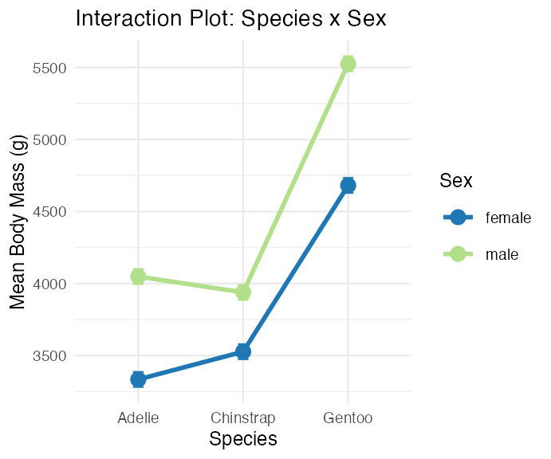
Part 8 · Unbalanced Designs
Introduction to Unbalanced Designs
The challenge of unbalanced data: real-world data is often unbalanced — unequal sample sizes across groups, missing data patterns, natural variation in sampling.
Key issues: Type I, II, and III SS stop agreeing; order of terms matters for Type I SS; marginal means ≠ simple averages.
The model is unchanged — \(Y_{ijk} = \mu + \alpha_i + \beta_j + (\alpha\beta)_{ij} + \varepsilon_{ijk}\) — but estimation of its parameters is not.
## [1] "Unbalanced sample sizes:"
## # A tibble: 6 × 3
## species sex n
## <fct> <fct> <int>
## 1 Adelie female 73
## 2 Adelie male 73
## 3 Chinstrap female 34
## 4 Chinstrap male 34
## 5 Gentoo female 58
## 6 Gentoo male 61
## [1] "Total N = 333"
## # A tibble: 3 × 4
## species female male prop_female
## <fct> <int> <int> <dbl>
## 1 Adelie 73 73 0.5
## 2 Chinstrap 34 34 0.5
## 3 Gentoo 58 61 0.487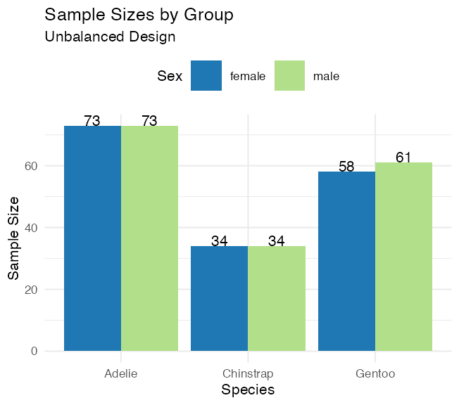
How Unbalanced Is It, Really?
What matters in a factorial design is not that all six cells are the same size. It is whether the sex split is the same proportion in every species.
- Adelie 73 / 73 → 50.0 % female
- Chinstrap 34 / 34 → 50.0 % female
- Gentoo 58 / 61 → 48.7 % female
If those three percentages were identical, the design would be proportional and the two factors would still be orthogonal — the SS types would still agree, unequal cell sizes or not.
Warning
⚠️ Honest warning about this dataset
The penguin design is nearly proportional. So the three SS types will move apart only slightly, and every p-value stays well below 0.001.
Watch that the numbers change at all — not how dramatically. A design with a half-empty cell is where this really bites, and that is the one you should be afraid of in your own data.
Type I (Sequential) SS
## Type I SS for the SAME model, two term orders:
## Effect Species_first Sex_first
## 1 Species 145190219 143401584
## 2 Sex 37090262 38878897
## 3 Interaction 1676557 1676557
##
##
## Type I SS, species entered first:
## Analysis of Variance Table
##
## Response: body_mass_g
## Df Sum Sq Mean Sq F value Pr(>F)
## species 2 145190219 72595110 758.358 < 2.2e-16 ***
## sex 1 37090262 37090262 387.460 < 2.2e-16 ***
## species:sex 2 1676557 838278 8.757 0.0001973 ***
## Residuals 327 31302628 95727
## ---
## Signif. codes: 0 '***' 0.001 '**' 0.01 '*' 0.05 '.' 0.1 ' ' 1How Type I SS works — sequential decomposition:
- First term gets all SS it can explain
- Second term gets SS after removing the first
- Third term gets SS after removing the first two
Problems with unbalanced data: order dependency, biased if factors are correlated, not invariant to coding.
Type II and Type III Sums of Squares
## [1] "All three types, side by side (F-values):"
## Effect Type_I_F Type_II_F Type_III_F
## 1 Species 758.36 749.02 746.92
## 2 Sex 387.46 387.46 311.84
## 3 Interaction 8.76 8.76 8.76
## [1] "Type III Sums of Squares:"
## Anova Table (Type III tests)
##
## Response: body_mass_g
## Sum Sq Df F value Pr(>F)
## (Intercept) 5232595969 1 54661.828 < 2.2e-16 ***
## species 143001222 2 746.924 < 2.2e-16 ***
## sex 29851220 1 311.838 < 2.2e-16 ***
## species:sex 1676557 2 8.757 0.0001973 ***
## Residuals 31302628 327
## ---
## Signif. codes: 0 '***' 0.001 '**' 0.01 '*' 0.05 '.' 0.1 ' ' 1- Type II — each main effect adjusted for the other main effect, but not for the interaction. Most powerful of the three when the interaction is genuinely absent.
- Type III — each term adjusted for everything else, interaction included. Order invariant; tests unweighted (marginal) means.
Read the table: the interaction F is identical under all three — it is the last term in, so there is nothing left to adjust it for. Species barely moves. Sex moves the most (387 → 312), because sex is the factor whose split is uneven across species.
Type III costs: lower power with missing cells, and it is meaningless without contr.sum.
## [1] "Effect Sizes (partial eta-squared, Type III):"
## Effect Partial_Eta_Sq
## 1 Species 0.8204
## 2 Sex 0.4881
## 3 Interaction 0.0508Manual SS Calculation, Step by Step
## [1] "Grand mean: 4207.1"
## [1] "Total SS: 215259666"
## [1] "Between-groups SS: 183957038"
## [1] "Within-groups SS: 31302628"
## [1] "Check: Between + Within = 215259666"## SS(Species alone): 145190219
## SS(Sex alone): 38878897
##
## Sum of main effects: 184069116
## Actual between SS: 183957038
##
## Difference (design is not orthogonal): -112078Note
✅ Key idea
Main effects don’t add up to the between-groups SS here because the effects aren’t orthogonal in an unbalanced design — proof that “unbalanced” really does change the arithmetic, not just the p-values.
Part 9 · EMMs and Diagnostics — the Unbalanced Model
Estimated Marginal Means — Unbalanced Data
## Species EMMs (model-based):
## species emmean SE df lower.CL upper.CL
## Adelie 3706 25.6 327 3656 3757
## Chinstrap 3733 37.5 327 3659 3807
## Gentoo 5082 28.4 327 5026 5138
##
## Results are averaged over the levels of: sex
## Confidence level used: 0.95
##
##
## Sex EMMs (model-based):
## sex emmean SE df lower.CL upper.CL
## female 3859 25.3 327 3809 3908
## male 4489 25.2 327 4440 4539
##
## Results are averaged over the levels of: species
## Confidence level used: 0.95Compact Letter Display — Unbalanced Data
Groups sharing a letter are not significantly different after a Sidak adjustment.
## species sex emmean SE df lower.CL upper.CL .group
## Adelie female 3368.836 36.21222 327 3272.980 3464.692 a
## Adelie male 4043.493 36.21222 327 3947.637 4139.349 b
## Chinstrap female 3527.206 53.06120 327 3386.749 3667.662 a
## Chinstrap male 3938.971 53.06120 327 3798.514 4079.427 b
## Gentoo female 4679.741 40.62586 327 4572.202 4787.281 c
## Gentoo male 5484.836 39.61427 327 5379.975 5589.698 d
##
## Confidence level used: 0.95
## Conf-level adjustment: sidak method for 6 estimates
## P value adjustment: sidak method for 15 tests
## significance level used: alpha = 0.05
## NOTE: If two or more means share the same grouping symbol,
## then we cannot show them to be different.
## But we also did not show them to be the same.Pairwise Comparisons — Unbalanced Data
The marginal species contrasts, then the simple effect of sex inside each species — the three numbers the interaction is actually about.
## Species pairwise comparisons (Tukey):
## contrast estimate SE df t.ratio p.value
## Adelie - Chinstrap -26.9 45.4 327 -0.593 0.8241
## Adelie - Gentoo -1376.1 38.2 327 -36.007 <0.0001
## Chinstrap - Gentoo -1349.2 47.0 327 -28.682 <0.0001
##
## Results are averaged over the levels of: sex
## P value adjustment: tukey method for comparing a family of 3 estimates
##
##
## Sex effect within each species:
## species = Adelie:
## contrast estimate SE df t.ratio p.value
## female - male -675 51.2 327 -13.174 <0.0001
##
## species = Chinstrap:
## contrast estimate SE df t.ratio p.value
## female - male -412 75.0 327 -5.487 <0.0001
##
## species = Gentoo:
## contrast estimate SE df t.ratio p.value
## female - male -805 56.7 327 -14.188 <0.0001What the Interaction Is Actually About
Males are heavier in all three species — but by 675 g, 412 g and 805 g. Same sign, different size: that is exactly what a significant interaction is.
## Sex effect (female - male, grams) by species:
## Species Sex_Effect
## 1 Adelie -675
## 2 Chinstrap -412
## 3 Gentoo -805
##
##
## Interaction interpretation:
## [1] "Sex effects differ across species"Diagnostic Plots — Unbalanced Design
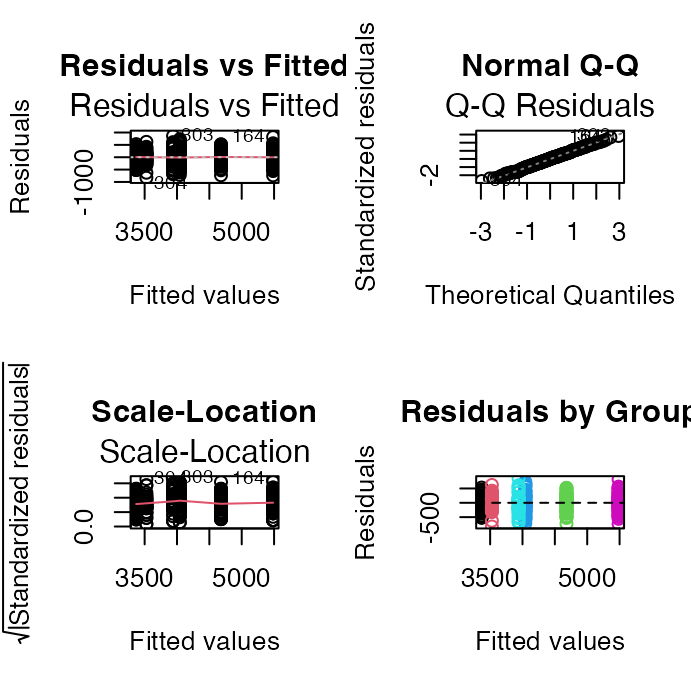
## [1] "Shapiro-Wilk test:"
##
## Shapiro-Wilk normality test
##
## data: residuals(model_u)
## W = 0.99776, p-value = 0.9367
## [1] "Levene's test:"
## Levene's Test for Homogeneity of Variance (center = median)
## Df F value Pr(>F)
## group 5 1.3908 0.2272
## 327
## [1] "Residual SD by group:"
## # A tibble: 6 × 3
## species sex sd_resid
## <fct> <fct> <dbl>
## 1 Adelie female 269.
## 2 Adelie male 347.
## 3 Chinstrap female 285.
## 4 Chinstrap male 362.
## 5 Gentoo female 282.
## 6 Gentoo male 313.Part 10 · Comparing Balanced vs. Unbalanced
Side-by-Side Comparison
## Balanced vs Unbalanced Results:
## Effect Balanced_F Balanced_p Unbalanced_F Unbalanced_p
## 1 Species 477.20 0e+00 746.92 0e+00
## 2 Sex 239.22 0e+00 311.84 0e+00
## 3 Interaction 9.10 2e-04 8.76 2e-04
##
##
## Sample sizes:
## Balanced total N: 204
## Unbalanced total N: 333
## Data discarded: 129 observations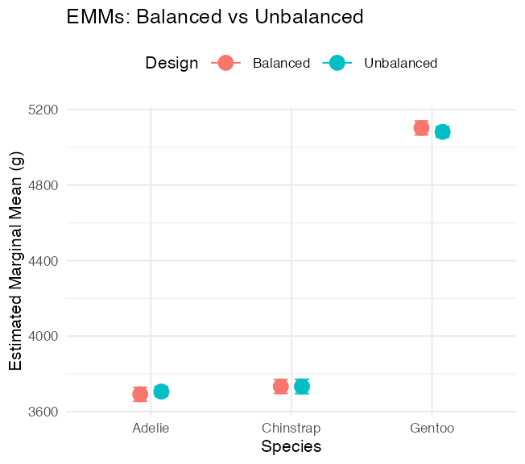
Part 11 · Summary and Best Practices
Summary — Unbalanced Designs
Challenges: Type I SS depends on order; simple means ≠ EMMs; reduced power for interactions; complex interpretation.
Solutions: use Type III SS for main effects; report EMMs, not simple means; check assumptions carefully; consider the impact of imbalance.
Recommendations:
- Always report: sample sizes per cell, type of SS used, EMMs with CIs
- Visualization: show actual data points, include error bars, note unequal sample sizes
- Interpretation: focus on effect sizes, consider practical significance, acknowledge limitations
Final Recommendations
For experimental studies: design for balance when possible, randomize allocation, plan for attrition.
For observational studies: accept imbalance as reality, use Type III SS, report EMMs, consider covariates (ANCOVA).
Note
Statistical software defaults
- R: Type I (sequential)
- SAS: Type III (marginal)
- SPSS: Type III (marginal)
Always specify which type you’re using!
Wrap-up — What You Did Today
- Fitted a factorial model with two categorical predictors —
body_mass_g ~ species * sex - Separated main effects from the interaction: an interaction means “the effect of one factor depends on the level of the other”
- Computed \(SS_A\), \(SS_B\), \(SS_{AB}\) and \(SS_{res}\) by hand and matched
anova()exactly - Used estimated marginal means rather than raw group averages
- Met Type I, II and III sums of squares — identical on the balanced design, slightly apart on the unbalanced one
- Set
contr.sumbefore asking for Type III - Reported partial η², the effect size that stays well defined either way
Important
⚠️ Read the interaction first
If the interaction is significant, a main effect is an average across conditions that behave differently — often not a meaningful quantity.
Interpret the interaction, then use simple effects — emmeans(model, ~ sex | species) or joint_tests(model, by = "sex") — rather than reporting the main effect as if it applied everywhere.
R even warns you: “Results may be misleading due to involvement in interactions.”
Wrap-up — The One Idea to Keep
Note
✅ Balance is a property of your design, not your analysis
A balanced design makes the two factors orthogonal, so each one’s sum of squares is unambiguous and the three SS types collapse to one number.
Imbalance makes the factors share variance — and then how you allocate that shared variance becomes a decision you have to make and defend in your methods section.
Tip
🖐 And one caveat on today’s data
The penguin imbalance is mild — five of six cells are exactly even. The SS types moved a little and no conclusion changed.
That is the common case. The uncommon case — a cell that is half empty, or empty — is where the choice decides the answer, and that is the one to watch for in your own data.
Note
Up next — Nested ANOVA
- When one factor is nested inside another rather than crossed with it
- Subsamples, and the right error term to test against